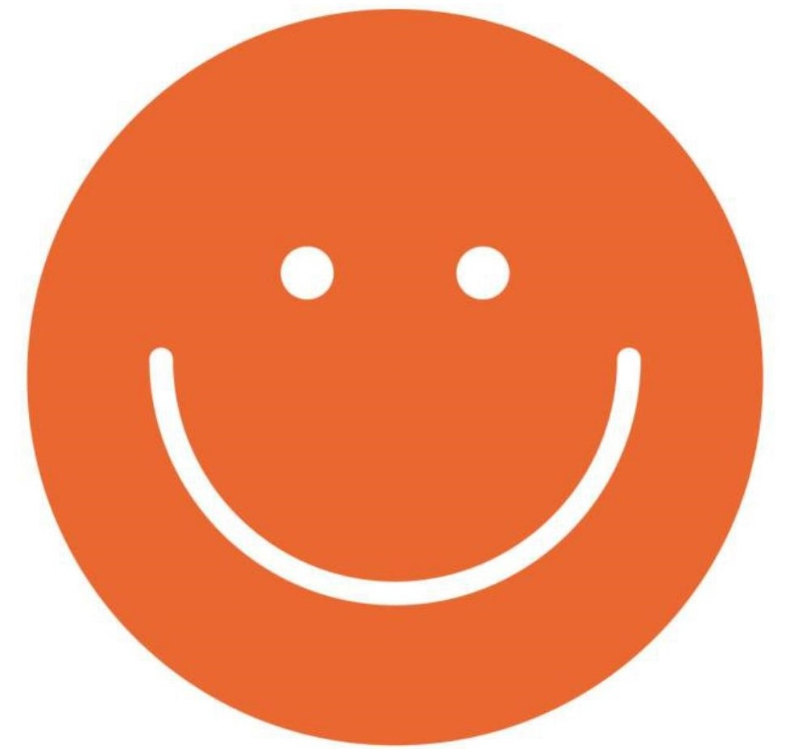
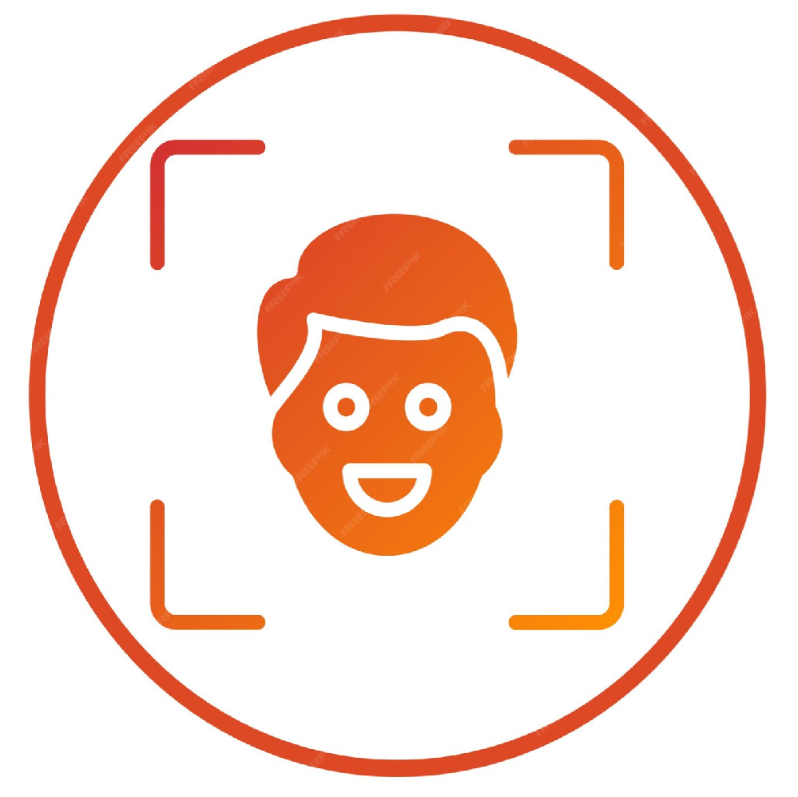
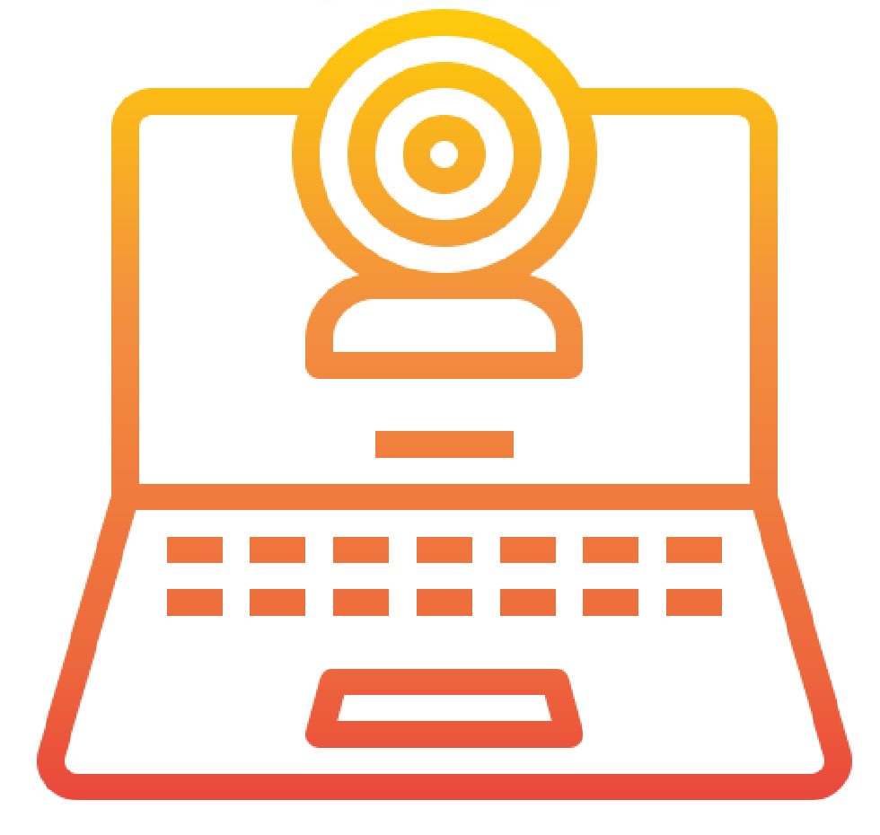

This study is part of a research project. All results will be deleted once the study is published.
! We value your privacy and do not store any images from your camera. It is not our intention to collect any personal data, and you always have the right to request the removal of your data.

Hi there!
You're about to take part in a study. Please read all the instructions carefully.
This study is part of a research project. All results will be deleted once the study is published.
! We value your privacy and do not store any images from your camera. It is not our intention to collect any personal data, and you always have the right to request the removal of your data.

Try to keep your head still and stay in front of the screen for the whole time.
Make sure no one will interrupt you for the next few minutes.
This study is part of a research project. All results will be deleted once the study is published.
! We value your privacy and do not store any images from your camera. It is not our intention to collect any personal data, and you always have the right to request the removal of your data.

Please enable your camera access.
Is your face clearly visible on the screen?
Calibration
Please click on each dot to turn it green
Click each point to calibrate.
Please look at the road network and hydrography on the map during eye tracking
Which of the following sketches is similar to the road network and hydrography depicted on the map?